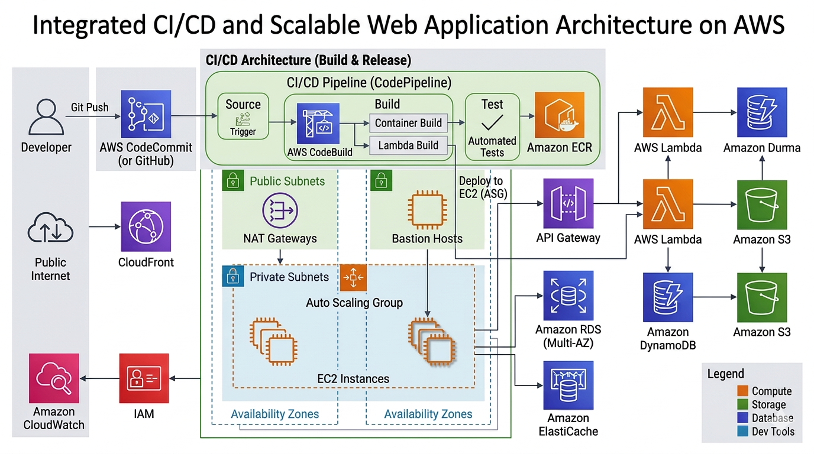
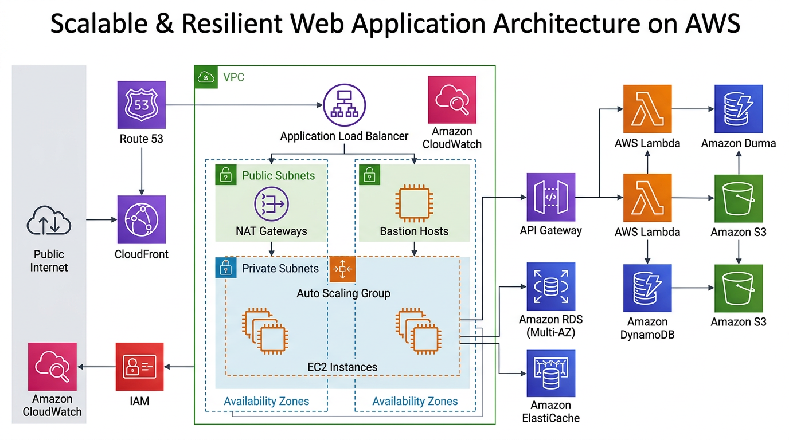
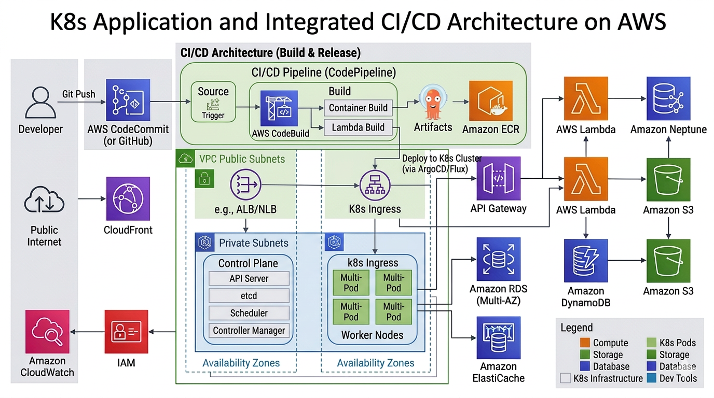

AWS Cloud & DevOps Engineer
Building scalable cloud infrastructure, automated CI/CD pipelines,
and reliable Kubernetes platforms.
Deploy Faster • Scale Smarter • Automate Everything
About Me
Results-driven AWS & DevOps Engineer with 5+ years of IT experience,
including 4+ years designing scalable cloud infrastructure and CI/CD automation.
Experienced in deploying containerized applications on Kubernetes (EKS),
provisioning infrastructure with Terraform, and implementing monitoring
with Prometheus and Grafana to improve system reliability.
Core DevOps Stack
AWS
Terraform
Kubernetes
Docker
Jenkins
GitHub Actions
Prometheus
Grafana
Linux
Helm
Ansible
Featured DevOps Work
CI/CD Automation Platform
Automated container build and deployment pipelines using Jenkins,
GitHub Actions and Docker.
View Architecture
AWS Infrastructure Automation
Provisioned production AWS environments using Terraform modules
and scalable networking architecture.
View Architecture
Kubernetes Production Platform
Deployed microservices to Amazon EKS using Helm,
blue-green deployments and automated scaling.
View Architecture
Project 1 — CI/CD Automation Platform

Designed and implemented a fully automated CI/CD platform for containerized
microservices using Jenkins and GitHub Actions.
The pipeline automatically triggers on code commits, builds Docker images,
runs tests, pushes artifacts to container registry, and deploys applications
to Kubernetes clusters.
Architecture Flow
- Developer pushes code to GitHub repository
- Jenkins pipeline triggers automated build
- Docker images are created and pushed to container registry
- Kubernetes cluster deploys updated containers
- Monitoring integrated using Prometheus and Grafana
Impact
- Deployment frequency increased by 60%
- Manual release effort reduced by 70%
- Consistent and reliable production deployments
Project 2 — AWS Infrastructure Automation with Terraform

Built scalable and secure AWS infrastructure using Terraform modules.
The architecture provisions networking, compute resources, and container
platforms in an automated and repeatable manner.
Architecture Components
- Custom VPC with public and private subnets
- Application Load Balancer for traffic distribution
- Auto Scaling EC2 instances for application workloads
- Amazon EKS cluster for container orchestration
- IAM roles and security groups for least-privilege access
Benefits
- Infrastructure provisioning automated through Terraform
- Environment setup time reduced from days to under 1 hour
- Improved consistency across Dev, QA, and Production environments
Project 3 — Kubernetes Production Deployment Platform

Designed a scalable Kubernetes platform using Amazon EKS to deploy
containerized microservices with high availability and automated scaling.
Architecture Flow
- Applications packaged as Docker containers
- Images stored in container registry
- Kubernetes deployments managed through Helm charts
- Rolling and blue-green deployment strategies implemented
- Horizontal Pod Autoscaler scales workloads dynamically
Reliability Features
- Zero-downtime application deployments
- Improved resource utilization through auto scaling
- Centralized monitoring using Prometheus and Grafana